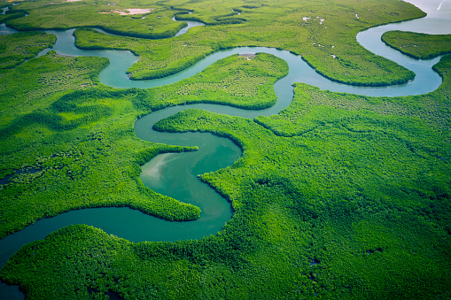

ガンビア
1.位置や分布
西アフリカ西岸に位置しています。陸地部分の国境はすべてセネガルと接してます。言い換えれば、海に面した西側以外でセネガルに取り囲まれています。首都はバンジュールで、最大の都市はセレクンダです。
2.場所
ガンビアは熱帯雨林気候に属し、降水量が多いことが特徴的です。また、雨季と乾季がはっきりしており、6～10月が雨季、11～5月が乾季となります。気温は年間を通して19～32℃程度を推移します。
3.人間と自然環境との相互依存関係
ガンビア川は、西アフリカ最大の川の一つであり、その流域は豊かな生態系を形成しています。川岸にはマングローブの森が広がり、多くの野生動物や鳥類が生息しています。ガンビア川は、国内の交通や経済活動にも重要な役割を果たしています。漁業や農業にとっての水源として利用されるほか、観光業においても重要なアピールポイントとなっています。観光客は川のクルーズを楽しんだり、川岸のリゾートでリラックスしたりすることができます。

4.空間的相互依存作用
16世紀、奴隷貿易が盛んに行われていた時代、クンタ・キンテ島が黒人奴隷の輸出拠点として用いられていました。フランスや海賊による襲撃をきっかけに拠点としての機能が荒廃した後は、奴隷の取引がないかを見張る2つの要塞が建設され、2003年に「クンタ・キンテ島と関連遺跡群（当時はジェームズ島と関連遺跡群）」として世界遺産に登録されています。

5.地域
アブコ自然保護区やビジロ国立公園などで自然と野生の動物を楽しむことができます。
6.SDGs
NPO法人がマーケット付近の清掃活動を行い、まちを綺麗にし、作業の様子や汚れていた場所が綺麗になったのを見た人々に環境を綺麗に保つ事への関心を持ってもらうことで自分たちの手で地域を綺麗にするという意識をもつようになりました。